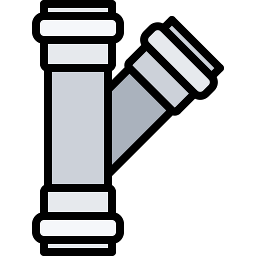

Nasce dall’esperienza ultraventennale dei suoi fondatori e dei suoi collaboratori nel campo della realizzazione e manutenzioni di impianti e delle costruzioni. Le esperienze maturate hanno portato SICOM a volersi occupare gestione e manutenzione di impianti ed edifici garantendo alla proprietà ogni servizio necessario ad un’adeguata gestione, in particolare agli edifici complessi come Ospedali, Strutture sanitarie in genere, Grandi uffici, o strutture commerciali. Sicom propone interventi di efficientamento energetico e miglioramento della qualità dell’edificio a partire dalla gestione dell’aria, storico cavallo di battaglia dei collaboratori oggi in SICOM.
L’aria è uno dei principali elementi dell’ambiente in cui viviamo, La sua qualità è elemento essenziale per la nostra salute e per il nostro benessere. Oggi è aumentata la nostra attenzione per la qualità dell’ambiente che ci circonda, alla qualità dei cibi che mangiamo, ma spesso ci dimentichiamo che l’aria che respiriamo negli ambienti in cui viviamo o lavoriamo, o ancor peggio dove ci troviamo per curarci non è garantita. L’aria non è mai completamente “pura”. Insieme all’ossigeno, fonte vitale per gli esseri viventi, passano miliardi di particelle. Tra queste ci sono anche componenti inorganiche, pulviscolo, scorie e microorganismi. Virus, batteri, muffe e metalli pesanti. Un mix di smog, inquinamento atmosferico e agenti tossici per la salute. Da diversi anni, numerose ricerche hanno confermato l’esistenza di una stretta relazione intrinseca tra la qualità dell’aria negli edifici e la salute delle persone che li occupano.
Per garantire una corretta gestione, e limitare i rischi per la salute, i circuiti aeraulici devono essere oggetto di un controllo ambientale, con relative analisi di controllo, ed una periodica manutenzione. Da oltre 20 anni i tecnici di SICOM si occupano di pulizia e sanificazione dei canali Aeraulici. L’azione di pulizia meccanica e la sanificazione con prodotti certificati è l’azione fondamentale ….. Oltre all’esperienza decennale dei nostri collaboratori tutti i nostri interventi sono eseguiti nel rispetto della normativa e delle procedure
Pianificare un’igienizzazione dell’ambiente con cadenza periodica è una strategia efficace per ridurre al minimo i pericoli. Le attività iniziano con una valutazione dell’impianto che avviene con un ispezione dello stesso con l’utilizzo di un robot teleguidato dotato di una telecamera incorporata. I tratti di canalizzazione vengono opportunamente individuati a seguito di una accurata analisi della struttura dell’impianto stesso, lo studio della planimetria dell’impianto e delle condizioni reali di lavoro negli ambienti coinvolti. Vengono quindi individuati i punti di accesso e di eventuale segregazione dell’impianto e, una volta concordati tempi e modalità di intervento con gli utilizzatori, viene effettuato l’accesso al fine di video- filmare e registrare lo stato delle superfici interne delle condotte di climatizzazione. L’esecuzione del lavoro è controllata, prima, durante e dopo da una telecamera montata su apposito Robot telecomandato in grado di ispezionare l’interno delle condotte e contemporaneamente registrare tutto lo svolgersi dell’attività. L’ispezione tecnica prevede normalmente campionamenti e/o controlli tecnici sui componenti dell’impianto al fine di valutarne l’efficienza, lo stato di conservazione e le condizioni igieniche. Questa attività permette di diagnosticare le criticità manifestate dall’impianto, le misure da intraprendere e la tempistica con la quale intervenire. L’ispezione tecnica può essere programmata sulla base dell’esito dell’ispezione visiva e delle precedenti ispezioni tecniche. Al superamento dei parametri degli inquinanti si dovrà procedere alla pulizia e sanificazione completa dell’intero sistema delle condotte, della centrale di trattamento d’aria alle bocchette e ai diffusori di mandate, alle griglie di ripresa interne ed a quelle di prelievo dell’aria esterna. In base al volume della condotta da disinfettare, attraverso un corretto calcolo dei tempi di immissione e dei tempi di contatto prescritti per l’utilizzo del singolo agente disinfettante, si garantisce la disinfezione totale del sistema di condizionamento. Nei condotti rivestiti internamente, dopo aver eseguito la pulizia, prima della chiusura ermetica delle aperture praticate per la pulizia, si introduce nelle tubazioni il robot pulitore che, opportunamente attrezzato con appositi spruzzatori, collegati per mezzo di un cavo ad una pompa “airless”, permette di spruzzare all’interno delle tubazioni, prodotti idonei ad ottenere la bonifica ed il rivestimento interno delle condotte. Una volta “pulito” l’impianto, per dare ai nostri clienti la massima tranquillità nel tempo di una corretta gestione dell’impianto, possiamo dotarlo delle apparecchiature studiate con SANIXAIR per garantire nel tempo con i processi di Fotocatalisi l’abbattimento della carica batterica. La fotocatalisi è un processo che avviene normalmente in natura, mediante l'azione combinata dell'umidità relativa all'aria ed all'azione del sole (raggi UV-C). Questo processo genera ioni ossidanti ed è in grado di distruggere la maggior parte delle sostanze tossiche presenti nell'aria. Aggiungendo alcuni metalli nobili, si potenzia l'effetto fotocatalitico: sono quindi stati creati dei dispositivi che svolgono questo processo. Questi dispositivi, investiti dal flusso d'aria, generano la reazione fotocatalitica che lega una molecola aggiuntiva di ossigeno a quelle dell'aria generando così del perossido di idrogeno che emesso in concentrazioni entro i limiti imposti dalle normative (meno di 0,02 parti per milione) esegue la distruzione della carica microbica, sia nell'aria che sulle superfici. Fanno parte del dispositivo una lampada di emissione UV-C, una struttura catalizzatrice a nido d'ape con biossido di titanio e l'aggiunta di latri elementi metallici nobili. L'aria con la sua umidità relativa attraversa il dispositivo e, aiutata dall'azione di un sistema di ventilazione, genera il fenomeno della fotocatalisi consentendo una sanificazione 24 ore su 24. L'azione fotocatalitica, oltre al eliminare la carica batterica, agisce sugli odori e la riduzione di allergeni. L'umidità relativa dell'ambiente dovrà avere un valore di almeno il 20% condizione riscontrabile quasi in tutto il globo terrestre. I sistemi di controllo consentono un costante monitoraggio dell’impianto ed i periodici test possono fornire al proprietario o ai responsabili della gestione dell’edificio la tranquillità di operare nel rispetto delle norme in un ambiente pulito.
Pur non esistendo una norma quadro di riferimento, sono numerosi i decreti, le norme e le delibere che dall’Unione Europea alle Regioni hanno affrontato il tema complessivo della qualità dell’aria negli ambienti chiusi. Alcune Leggi Regionali prescrivono di valutare lo stato igienico dei componenti dell’impianto attraverso il monitoraggio delle superfici a contatto con il flusso d’aria. In tal caso è raccomandabile valutare le cariche totali batteriche e micetiche. all’esterno che all’interno, mediante la pulizia ed igienizzazione con idonei prodotti, di tutte le componenti della stazione; con attenzione particolare all’igiene degli impianti di trattamento aria. La norma UNI 10339, in vigore dal 1995, regolamenta la progettazione e la realizzazione degli impianti aeraulici al fine di garantire il benessere delle persone che frequentano luoghi chiusi. Anche la Comunità Europea ha emanato direttive sull’argomento, tra queste la EN 13779.
SICOM srl progetta ed installa impianti elettrici e meccanici per clienti nell’Ambito Sanitario Pubblico e nel Privato. SICOM realizza impianti elettrici, idraulici, tecnologici e di sicurezza, sia su scala industriale che civile. L’azienda è abilitata all’installazione, alla trasformazione, all’ampliamento e alla manutenzione degli impianti di cui all’Art. 1 della Legge n. 37/2008 per le lettere:
SICOM srl opera nel campo dell’edilizia, delle manutenzioni edili e delle ristrutturazioni per conto di Enti Pubblici e Privati su tutto il territorio del Triveneto, con una pluriennale esperienza nel settore. La costruzione di edifici ad uso sociale, richiede particolare attenzione sia per il tipo di edificio che si va a costruire, che per le modalità da adottare durante le lavorazioni. Occorre necessariamente rispettare i requisiti qualitativi stabiliti in fase progettuale e i tempi di realizzazione programmati con il Committente. Un aspetto importante che caratterizza il nostro operato riguarda la particolare attenzione al personale presente negli edifici pubblici, durante i nostri interventi di restauro o manutenzione. Le nostre maestranze, infatti, operano cercando di recare il minimo fastidio, in tutti quei casi in cui non è possibile trasferire il personale o sospendere le attività in corso, come all’interno di un ospedale, di una scuola, di una caserma, etc. Luoghi in cui spesso è necessario far convivere il proprio lavoro in essere, nell’indispensabile rispetto reciproco. Oltre a costruire dal nuovo, siamo specializzati nelle attività di manutenzione ordinaria e straordinaria, essendo dotati delle certificazioni necessarie per poter intervenire in questo specifico settore.
L’attenzione di SICOM per la qualità degli ambienti in cui viviamo ci ha portato a sviluppare progetti ad alto contenuto tecnologico per la realizzazione di strutture e pareti attrezzate Per questo partecipiamo ad una start up innovativa che ha sviluppato una linea di pareti e strutture attrezzate per ambienti sanitari che consentono di coniugare alla qualità del luogo soluzioni che rendono più “umano” e piacevole la permanenza in luoghi di cura. Le pareti HUMANAE per le soluzioni tecnologiche adottate consentono di migliorare anche la qualità dell’aria, storico cavallo di battaglia di SICOM, ed assicurano una corretta igienizzazione assicurando i più elevati standard di sicurezza
SICOM srl propone servizi, prodotti e sistemi integrativi per il risparmio energetico e l’efficienza energetica, con particolare propensione verso le fonti di energia rinnovabili di comprovata tecnologia, semplicità di attuazione e manutenzione e alto beneficio economico. La soluzione per il risparmio energetico proposta si fonda sempre su analisi e specifici studi delle esigenze del Cliente, suggeriamo e realizziamo la migliore soluzione dal punto di vista del risparmio e dell’efficienza energetica, perseguendo obiettivi di ottimizzazione delle risorse, di ritorno economico e di rispetto ambientale.
Via N. Copernico 2B/1F 35013 Cittadella (PD)
049 9999999
info@sicomsrl.net
Via Lavinio 22 – 00183 Roma
06 48907925
info@sicomsrl.net